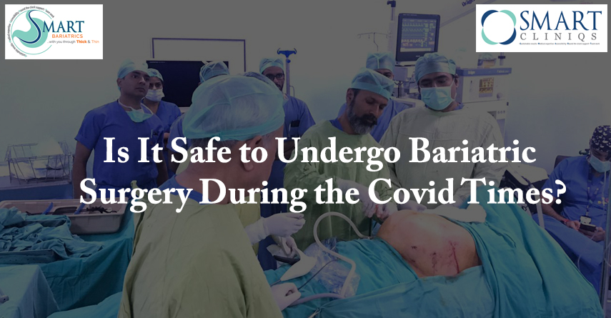

Ensuring Safety: Bariatric Surgery During COVID-19
We are grappling with this monstrous epidemic which has taken a heavy toll all over the world. India had to undergo a strict lockdown in March and April this year. Life had come to a standstill; things are now slowly limping back to normal. The people were scared of coming out of their houses and were rightly so. Only patients with dire emergencies visited the hospitals, many hospitals in Delhi have been converted to exclusive COVID hospitals. Elective surgeries were deferred till the month of May.Safety of Bariatric Surgery During Covid-19
Now all surgeries including bariatric surgery are routinely being performed as safely as they were before. Hospitals are safe places to visit, maybe even more so, as they are taking stringent precautions. Although this menace is not yet completely over, the situation is easing out a bit in Delhi. Life has to go on. So the question is, is it safe to get your keenly awaited bariatric surgery for which you had made up your mind and had even fixed up the date with your surgeon, and then the lockdown happened? The answer is a clear Yes! Provided you take all the normal precautions which you should be taking otherwise.Precautions to follow during COVID-19:
- You must wear a surgical or better still N95 mask at all times when you visit the hospital or your doctor.
- Get a covid test, before your surgery as close to the date as possible, certainly not before 5 days.
- Maintain a gap of 3 feet between the next person and you.
- Check your mask before you enter the lift it should cover both your mouth as well as your nose completely. It is a common tendency to let the mask slip from the nose.
- Better still use stairs if you can.
- It is a good idea to carry soap sachets, or a hand sanitizer with you. And clean your hands once you touch the railing, door knobs, or other objects.
- Once admitted, ask your friends and family not to visit you unnecessarily, after all normally the whole process involves a one to three days stay.